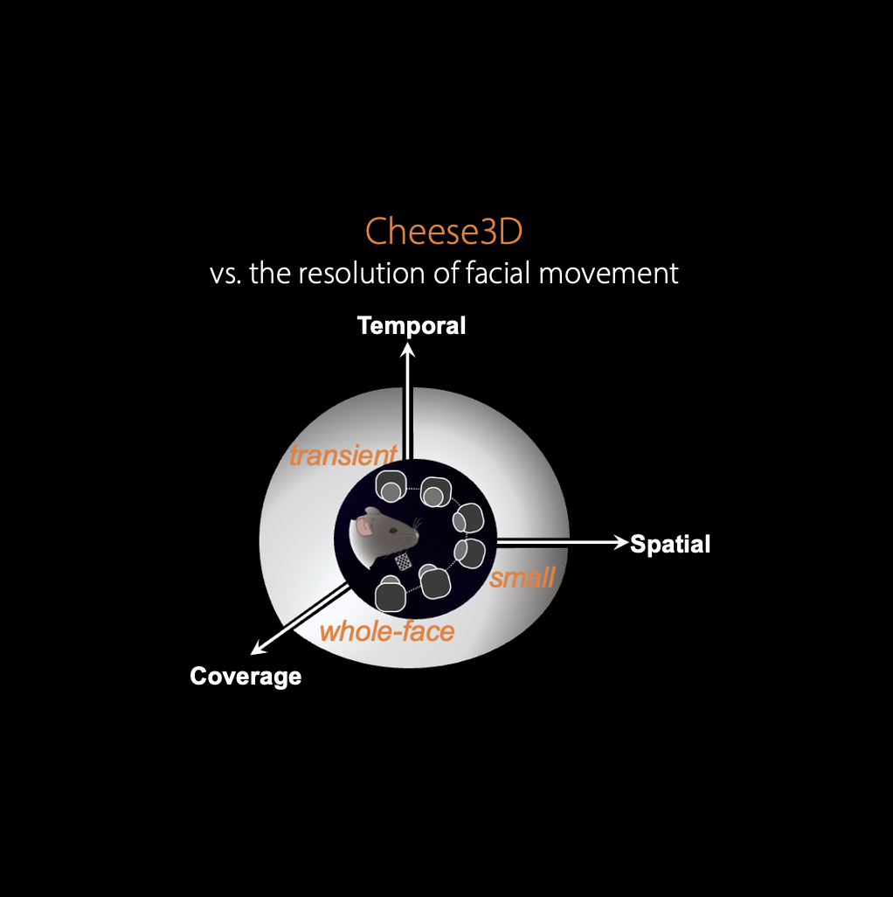
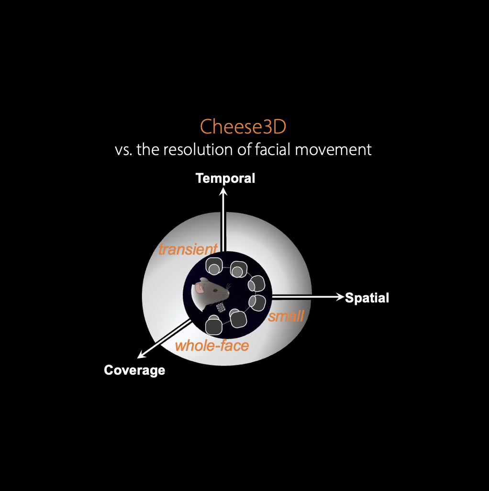
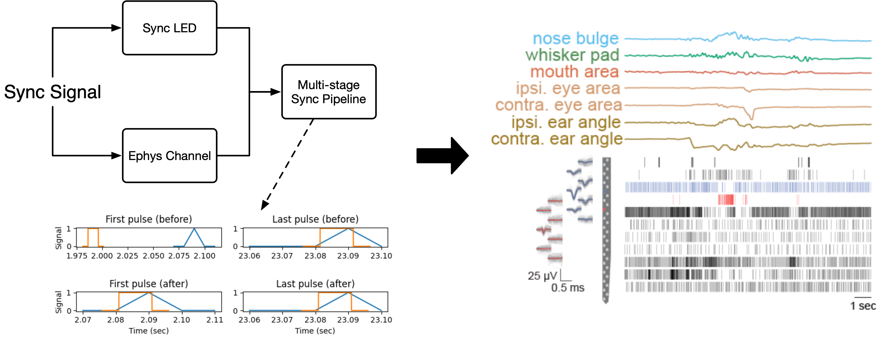

Cheese3D#
Cheese3D is a pipeline for tracking mouse facial movements built on top of existing tools like DeepLabCut/DeepLabCut and lambdaloop/anipose. By tracking anatomically-informed keypoints using multiple cameras registered in 3D, our pipeline produces sensitive, high-precision facial movement data that can be related internal state (e.g., electrophysiology).
 

{kind=link}
Using a combination of hardware synchronization signals and a multi-stage pipeline, we are able to precisely synchronize video and electrophysiology data. This allows us to relate spikes recorded in the brainstem to various facial movements (here, we highlight two example units correlated with ipsilateral ear movements).
If you use Cheese3D, please cite our preprint:
@article {Daruwalla2024.05.07.593051,
author = {Daruwalla, Kyle and Martin, Irene Nozal and Frankel, Andrew and Nagli{\v c}, Diana and Ahmad, Zainab and Hou, Xun Helen},
title = {A 3D whole-face movement analysis system to uncover underlying physiology in mice},
elocation-id = {2024.05.07.593051},
year = {2024},
doi = {10.1101/2024.05.07.593051},
publisher = {Cold Spring Harbor Laboratory},
URL = {https://www.biorxiv.org/content/early/2024/05/08/2024.05.07.593051},
eprint = {https://www.biorxiv.org/content/early/2024/05/08/2024.05.07.593051.full.pdf},
journal = {bioRxiv}
}
How-to examples
Reference